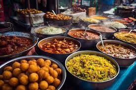
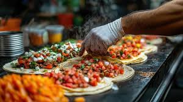
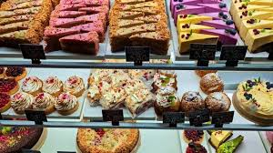
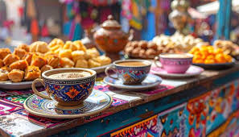

Join us for a culinary journey through the diverse and flavorful world of Indian cuisine. From spicy street food to rich desserts, there's something for everyone to enjoy!
Experience the vibrant flavors of Indian street food with dishes like Pani Puri, Vada Pav, and Chaat.
Explore the diverse regional cuisines of India, including Punjabi, South Indian, Bengali, and more.
Indulge in traditional Indian sweets such as Gulab Jamun, Jalebi, and Rasgulla.
Refresh yourself with popular Indian beverages like Masala Chai, Lassi, and Nimbu Pani.
| Chef Name | Specialty | Experience (Years) |
|---|---|---|
| Vikas Khanna | Indian Cuisine | 25 |
| Sanjeev Kapoor | North Indian Cuisine | 30 |
| Floyd Cardoz | Contemporary Indian Cuisine | 20 |
| Manish Mehrotra | Modern Indian Cuisine | 18 |